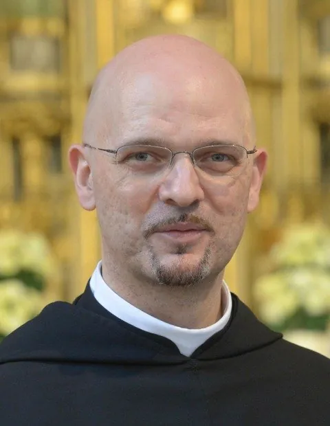
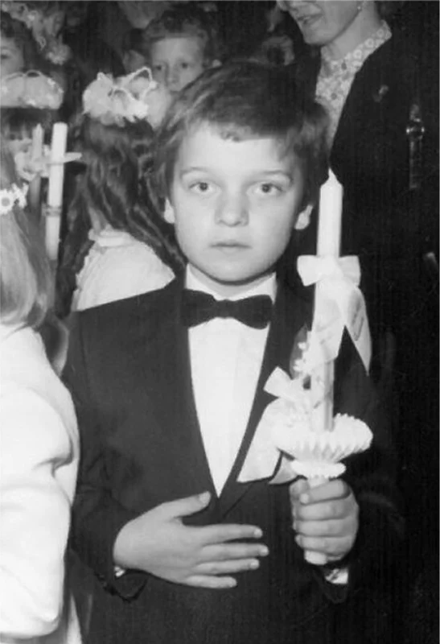

Pfarre St. Augustin
Seit 1783 Pfarrkirche, seit 1951 wieder von den Augustinern betreut: eine Innenstadtpfarre, zu der Menschen aus ganz Wien kommen.
Pfarre St. Augustin
Herzog Friedrich der Schöne stiftete Kirche und Kloster 1327, geweiht wurde die Kirche am 1. November 1349. Von 1634 bis 1918 war die Augustinerkirche kaiserliche Hofpfarrkirche, durch die Reformen Josephs II. wurde sie 1783 Pfarrkirche. Als das Kloster in den 1830er-Jahren ausstarb, übernahmen Diözesanpriester die Seelsorge; 1951 wurde die Pfarre wieder den Augustinern anvertraut.
Zur Pfarre gehören außerdem acht Rektoratskirchen und Kapellen, die zum Teil von Ordensgemeinschaften betreut werden: die Annakirche, die Kapuzinerkirche, die Malteserkirche, St. Ursula, die Hofburgkapelle, das Center St. Elisabeth, die Loretto-Gemeinschaft und die Krypta am Heldendenkmal. Viele Pfarrangehörige feiern deshalb in anderen Kirchen der Innenstadt, und umgekehrt kommen jeden Sonn- und Feiertag Gläubige aus ganz Wien und Umgebung nach St. Augustin. 2015 zählte die Pfarre 1.088 Katholikinnen und Katholiken.
Eine besondere Rolle spielt das sonntägliche Hochamt. Über die Kirchenmusik finden auch Musikliebhaber regelmäßig in die Augustinerkirche, und viele von ihnen werden Teil der Gemeinde. Gebet in Wort und Gesang ist hier Verkündigung: Kultur kommt von Kult. Die Pfarre möchte eine einladende Kirche sein, zuerst in der Feier der Eucharistie, dann im Mittun und im Aufbau der Gemeinde. Verkündigung, Gottesdienst und Dienst am Nächsten gehören dabei zusammen, getragen von der augustinischen Spiritualität der Gemeinschaft.
Augustinerstraße 3, 1010 Wien. Eingang zur Kirche am Josefsplatz.
Pfarrer

P. Matthias wurde 1972 in Wien geboren und wuchs in der Leopoldstadt auf, wo die Pfarre St. Josef zu seiner geistlichen Heimat wurde. Nach einer Lehre als Florist trat er 1992 in den Augustinerorden ein, legte nach dem Noviziat in Italien 1995 die einfache und 1999 die feierliche Profess ab und wurde am 15. Oktober 2010 zum Priester geweiht.
Seit 1. September 2011 leitet er die Pfarre St. Augustin, seit 1. Juni 2024 ist er außerdem Dechant des Stadtdekanats Wien 1. Im Augustiner-Vikariat Wien war er 2005 bis 2017 Sekretär, 2009 bis 2017 Vikariatsrat, 2011 bis 2017 Subprior des Wiener Klosters und 2017 bis 2025 Regionalvikar. Von 2008 bis 2021 verantwortete er die Kirchenmusik von St. Augustin und gründete mit Mitbrüdern und HR Dr. Margarete Strassnig-Bachner die Patenschaft St. Augustin.
Seit 2011 unterrichtet er an der SPAR Akademie Wien. Im Vikariat Wien Stadt bildet er Kommunionhelferinnen und -helfer sowie Krankenkommunionhelfer aus und wirkt bei der Ausbildung von Begräbnisleitern mit; seit September 2020 ist er Firmspender der Erzdiözese Wien.
Sein Leitwort stammt vom heiligen Augustinus: „In dir muss brennen, was du in anderen entzünden willst.“
Sprechstunden nach telefonischer Vereinbarung: +43 (0)1 533 70 99, pfarrer(at)augustinerkirche(dot)at, als Dechant dechant(at)augustinerkirche(dot)at
P. Mag. Matthias Schlögl OSA, Sprechstunden nach telefonischer Vereinbarung
Wort des neuen Pfarrers

Mit 1. September 2011 hat P. Matthias die Leitung der Pfarre St. Augustin übernommen. Für unser Mitteilungsblatt hat er kurz seine „Vision“ vorgestellt, die ihn am Anfang seiner neuen Tätigkeit leiten wird:
Als Verantwortlicher einer Pfarrgemeinde möchte ich bei den Menschen „ankommen“ – nicht unbedingt als Person, sondern viel mehr mit der Botschaft, die ich zu verkünden habe. Und so ist es mir wichtig, dass ich das, was ich predige, auch lebe; dass ich das, was ich verkünde, auch selbst glaube; dass ich das, wovon ich überzeugt bin, auch anderen vermitteln kann; dass ich das, was „in mir brennt“, auch in „anderen entzünden und entfachen“ kann (vgl. Augustinus). Ob es mir immer gelingen wird, weiß ich nicht. Ich möchte mich aber auf jeden Fall freudigen Herzens darauf einlassen, um mit allen Menschen, die hier in St. Augustin ein Stück Heimat gefunden haben, gemeinsam auf dem Weg zu sein, die zu stützen, die den Weg nicht mehr alleine gehen können, und die zurückzuholen, die den Weg verlassen haben. Und ich lade auch Euch/Sie ein, mich zu bremsen, wenn ich auf diesem Weg zu schnell, oder mich anzutreiben, wenn ich zu langsam unterwegs bin.
Auf unseren gemeinsamen Weg freut sich Euer/Ihr P. Matthias
Berufung: Ministrant, Blumenbinder, Augustiner

Bericht in der Wiener KirchenZeitung „Der SONNTAG“ über P. Matthias von Stefan Hauser, 10.05.2015
P. Matthias Schlögl war in jungen Jahren nicht gerne in der Sonntagsmesse. Das änderte sich. Heute bringt der gelernte Florist den Blumenschmuck am Altar an, steht dort aber auch dem Gottesdienst vor.
„Ich bin eigentlich ungern in die Kirche gegangen“, gibt P. Matthias zu. Denn wenige Kinder gingen früher in die Pfarre St. Josef in Wien-Leopoldstadt. Da serviert er seinen Eltern lieber das Frühstück und darf dann zu Hause bleiben.
Motivierender ist der Religionsunterricht in der Volksschule bei Sr. Fritzi Magloth. Nach einem Schulgottesdienst lädt Pfarrer Wolfgang Schubert zum Ministrieren ein. Einige Klassenkollegen beginnen, das macht ihn neugierig und er wird mit zehn Jahren Ministrant. So begeistert, dass er täglich zur Messe geht. „An Sonn- und Feiertagen habe ich bei allen fünf Messen ministriert“. Der Pfarrer versucht, ihn davon abzubringen, er hat Sorge, diese Begeisterung könnte umschlagen.
Nach der Hauptschule will Matthias eine Friseurlehre beginnen. Aber ein Aushilfspriester fragt ihn, ob er nie daran gedacht habe, Priester zu werden? „Das traf mich wie ein Pfeil ins Herz, ich hatte seine große innere Freude und Sehnsucht verspürt, dass ich plötzlich wusste, dass das mein Weg ist“. Matthias Schlögl wechselt ins Erzbischöfliche Knabenseminar Hollabrunn.
Schwierigkeiten mit Mathematik begleiten ihn. Vor der Maturaklasse weiß er, „der richtige Weg für mich ist, Blumenbinder zu werden“. Er findet kurzfristig eine Lehrstelle, der Beruf macht ihm viel Freude. Er kauft sich ein Auto und fährt jeden Monat zur Wallfahrt nach Maria Roggendorf.
Am 13. August 1990 „lernte ich dort zwei Augustiner kennen, die mich baten, sie nach Wien mitzunehmen“. Eine Begegnung mit Folgen. Die jungen Mönche laden ihn zum Augustinusfest ein.
Damit beginnt eine Zeit des Kennen- und Schätzenlernens für Matthias Schlögl, er spürt, „dass mir mein Beruf als Florist Freude macht, meine Berufung aber eine andere ist, jene zum Ordensmann und Priester.“
Interview mit dem neuen Regionalvikar P. Matthias


P. Matthias hat mit 28. August 2017 die Leitung des Augustiner-Vikariats Wien übernommen. Das Mitteilungsblatt der Augustinerkirche KIRCHE AM ORT hat ihn zu einem Interview getroffen:
Lieber P. Matthias! Bitte stelle dich kurz persönlich vor:
Mein Name ist Pater Matthias Schlögl, ich bin 45 Jahre alt und im 2. Wiener Gemeindebezirk geboren. Dort bin ich bei meinen Eltern und mit meinen beiden größeren Brüdern aufgewachsen. Dort bin ich auch in die Schule gegangen und habe die Liebe zur Kirche kennen gelernt. Meine Heimatpfarre St. Josef war dafür ein ganz wichtiger und entscheidender Ort in meiner Berufungsgeschichte. Die beiden Priester in der Pfarre, unser Pfarrer Wolfgang Schubert und mein Beichtvater Prof. Eugen Klose, waren echte priesterliche Vorbilder für mich und haben mir auf meinem geistlichen Weg sehr geholfen und mich unterstützt.
Kannst du uns bitte wichtige „Schlüsselerfahrungen“ erzählen, die auf deinem Lebens- und Glaubensweg bedeutsam sind? Welche Menschen, Orte, Zeiten, … sind für dich und deine Berufung fundamental prägend gewesen?
Meine erste Schlüsselerfahrung war die Begegnung mit einem Gastpriester in unserer Pfarre Ende August 1986. Er hat mich nach einem Gottesdienst gefragt, ob ich mir nie überlegt hätte, Priester zu werden. Durch ihn, Pfarrer Adolf Schneider, der Krankenhausseelsorger bei den Barmherzigen Brüdern war, ist erst der Mut in mir erwacht, wirklich darüber nachzudenken und solche Gedanken überhaupt zuzulassen. Er war es auch, der die ersten Kontakte hergestellt hatte, damit ich in das damalige Knabenseminar in Hollabrunn gehen konnte.
Eine weitere Schlüsselerfahrung war die Monatswallfahrt nach Maria Roggendorf am 13. August 1990, die der damalige Bischof von Vorarlberg, Dr. Klaus Küng, gehalten hatte. Kurz bevor ich heimfahren wollte, sprachen mich zwei Augustiner an und baten mich, sie mit nach Wien zu nehmen, weil sie mit ihrem Auto eine Panne hatten. Das war der erste Kontakt mit Augustinern, die ich davor nicht kannte.
Und schließlich war mein ganzes Noviziat so eine Schlüsselerfahrung. Ich hatte einen ungewöhnlich strengen Novizenmeister, dafür aber einen gütigen und klugen Prior in Tolentino, Italien. Von ihm, P. Federico Cruciani OSA, habe ich enorm viel gelernt. Er schenkte mir so oft Kraft und zeigte mir dadurch, was wirklich wichtig und entscheidend im Ordensleben ist. Er war der einzige, dem ich es zu verdanken habe, dass ich meine Noviziatszeit überstanden und vor allem gut überstanden habe.

Und eine ganz besondere Erfahrung war die letzte Begegnung mit meinem Novizenmeister im Oktober 2013 in Rom. Wir hatten nach dem Noviziat keinen Kontakt mehr und sahen uns nur mehr selten bei allfälligen Besuchen in Italien. Da er nach meinem Noviziat die Empfehlung ausgesprochen hatte, mich aus dem Orden zu entlassen, weil ich kein Augustiner werden könne, war die Stimmung bei diversen Wiedersehen immer mehr als angespannt. Bei diesem Treffen – ich besuchte mit einer Gruppe aus St. Augustin unsere römische Basilika St. Augustinus – wollte er kurz mit mir sprechen. In diesem Gespräch bat er mich um Verzeihung für alles, was er im Noviziat falsch gemacht hat. Mich haben diese zwei Minuten so unglaublich beeindruckt, weil es ein alter, gebrechlicher Mensch geschafft hat, nach fast 20 Jahren für begangene Fehler um Verzeihung zu bitten… Ich war ihm sehr dankbar für dieses Zeichen. Ich versprach ihm, dass wir einmal länger darüber sprechen werden und umarmte ihn zum Abschied. Zu diesem Gespräch ist es leider nie gekommen, weil er bald danach starb. Er hat mir aber in diesen zwei Minuten vielleicht Wichtigeres beigebracht, als im ganzen Noviziatsjahr: nämlich dass es möglich ist, immer umzukehren und für begangene Fehler um Verzeihung bitten zu können… Heute bin ich dankbar für mein schweres Noviziat und für alles, was ich darin gelernt habe. Und ich bin auch dankbar für meinen Novizenmeister P. Renzo Lucozzi OSA, der am Ende seines Lebens noch wahre Stärke und Größe bewiesen hat!
Du bist schon einige Jahre Augustiner! Was erlebst du als Freude in deinem Dienst und was erlebst du als Herausforderung?
Ich bin 1992 in unseren Orden eingetreten. Freude war und ist mir in all den Jahren der gemeinsame Weg mit einer sehr unterschiedlichen Innenstadt-Gemeinde, das gegenseitige Aufeinanderzugehen und das Voneinanderlernen. Herausforderung ist sicher, dass man heutzutage als Mönch immer mehr Manager und Redakteur sein muss, als Seelsorger. So kommen sehr oft viele Menschen in meinem Leben zu kurz, weil ich einfach zu wenig Zeit für sie und ihre Anliegen und Sorgen habe. Das zu ändern, nehme ich mir jedes Jahr erneut vor – leider gelingt mir das nicht immer.
Wo holst du dir Kraft für deinen Einsatz für Gott und Menschen?
Meine Kraft hole ich mir im Gebet und in der Musik.
Ich „durchwandere“ gerne und oft die Augustinerkirche zu Zeiten, in der die Türen bereits verschlossen sind. Gerade da ist so viel zu spüren von dem Gebet und dem Geist der vielen Augustiner, die in den letzten Jahrhunderten in unserer Kirche gelebt und gewirkt haben. Da erhalte ich auch die Kraft, im Gebet diesen Geist nicht nur zu spüren und zu empfangen, sondern diese spirituelle Kraft auch heute weiterzutragen.
Und die Musik ist mir wichtig, weil sie Balsam für meine Seele ist. Musik mobilisiert mein Gehirn und produziert Glückshormone, sodass mir besonders in Stresszeiten Musik immens viel weiter hilft.
Was sind deine „Sternstunden“ als Augustiner im letzten Jahr gewesen?
Eine Sternstunde war für mich der Beginn von „St.-Augustin-Karaoke“. Durch dieses niedrigschwellige Angebot mit dem gemeinsamen Singen konnten wir im vergangenen Jahr sehr viele neue Menschen ansprechen und kennenlernen. Viel Neues ist geschehen, mancher hat neues Interesse an der Kirche und an seinem Glaubensleben gefunden bis hin zu einem ersten Wiedereintritt in die katholische Kirche.
Eine weitere Sternstunde ist die Ausbildung zu Kommunionhelfer/inne/n, die ich im vergangenen Jahr für die Pfarren der Stadt Wien übernommen habe. Dadurch habe ich mich auch wieder viel mehr mit meinem eigenen Eucharistieverständnis auseinandergesetzt. Es ist schön, sich mit Menschen über das Wichtigste, das uns die Kirche geschenkt hat, auszutauschen und miteinander zu lernen.
Hast du ein Ziel, ein „Programm“ für deinen Dienst als Regionalvikar?
Ein Ziel ist es, als Augustinermönche wieder präsenter in der Stadt und unserem Land zu werden. Derzeit sind wir vier Augustiner in Wien und haben einen Kandidaten. Als so eine kleine Gemeinschaft wieder neu Freude am Ordensleben auszustrahlen, damit auch neue Männer Interesse am Ordensleben in unserer Gemeinschaft spüren, dazu bemühe ich mich.
Ein weiteres Ziel ist meine Sorge um die älteren Mitbrüder. Ich bin mit meinen 45 Jahren der jüngste Augustiner mit ewigen Gelübden. Hier einen „väterlichen“ Umgang mit meinen Mitbrüdern zu entwickeln, möchte ich lernen.
Kannst du uns bitte einen kurzen Impuls, eine frohe Botschaft für unser Leben, Arbeiten und die Entfaltung des Lebens in Gemeinschaft mitgeben?
Ich möchte allen Leser/inne/n das Zitat des hl. Augustinus ans Herz legen, das ich schon bei meiner Amtsübernahme am Augustinusfest den Menschen zugerufen habe: „In dir muss brennen, was du in anderen entzünden willst!“ Wenn mir das bewusst ist, dann liegt es zuerst an mir, etwas zu entwickeln, ins Leben zu rufen bzw. zum Brennen zu bringen, was ich von anderen erwarte. Ich muss mein Feuer, meine Begeisterung, meine Leidenschaft zuerst entflammen – dann kann sich auch im anderen etwas entzünden und entwickeln!
Pfarrkanzlei
Die Pfarrkanzlei ist die erste Anlaufstelle für alle Anliegen an die Pfarre St. Augustin: für die Anmeldung zu Taufe, Firmung oder kirchlicher Trauung, für einen Krankenbesuch oder im Todesfall. Hier erreichen Sie auch die haupt- und ehrenamtlichen Mitarbeiterinnen und Mitarbeiter der Pfarre.
Eine wichtige Aufgabe ist die Matrikenführung: Taufen, Firmungen, Trauungen und Todesfälle werden in die Katholikendatei der Erzdiözese eingetragen, auch für die Rektoratskirchen und Kapellen der Pfarre.
Betreut wird die Pfarrkanzlei von Pfarrsekretärin Ursula Lechner. Passen Ihnen die Kanzleistunden nicht, vereinbaren Sie gerne telefonisch einen anderen Termin.
Kanzleistunden: Dienstag und Freitag 10–12 Uhr oder nach telefonischer Vereinbarung
Pfarrgemeinderat
Der Pfarrgemeinderat trägt gemeinsam mit dem Pfarrer Verantwortung für das Leben und die Entwicklung der Pfarrgemeinde. Er wird alle fünf Jahre von den Pfarrangehörigen gewählt und geht auf das Zweite Vatikanische Konzil zurück, das beratende Gremien in den Pfarren angeregt hat.
Für seine Arbeit bildet er Fachausschüsse, in die auch Nichtmitglieder berufen werden können. In allen Fragen, die dem Pfarrer als Seelsorger übertragen sind, berät er; über den Dienst der Pfarre an Gesellschaft und Welt, etwa Caritas, Medien oder Projekte in der Einen Welt, kann er selbst beschließen. Für die Vermögensverwaltung gibt es einen eigenen Vermögensverwaltungsrat.
Mitglieder und Fachbereiche
- P. Mag. Matthias Schlögl OSAPfarrer, Vorsitzender
- Vorsitzender des Pfarrgemeinderats und des Vermögensverwaltungsrats
- Leitet die Fachausschüsse Gemeindeaufbau (Koinonia), Liturgie, Berufungspastoral, Öffentlichkeitsarbeit und Augustiner-Reisen
- Mitglied im Fachausschuss Verkündigung (Sakramentenpastoral)
- Edith SchiavonStellvertretende VorsitzendePensionistin
- Leitet den Fachausschuss Erwachsenenbildung
- Mitglied in den Fachausschüssen Caritas, Gemeindeaufbau und Liturgie
- Monika KettingerStellvertretende Vorsitzende des Vermögensverwaltungsrats
- Christine HummerGewähltes MitgliedHausfrau
- Leitet die Fachausschüsse Jugend und Sorge um die Senioren
- Mitglied in den Fachausschüssen Gemeindeaufbau, Kinder sowie Feste und Feiern
- Klaus KettingerGewähltes MitgliedSchuldirektor
- Leitet den Fachausschuss Kunst und Kultur
- Mitglied in den Fachausschüssen Gemeindeaufbau, Liturgie, Schöpfungsverantwortung und Kirchenmusik
- Mitglied des Vermögensverwaltungsrats
- Ulrike KomarekBestelltes MitgliedOrthoptistin
- Leitet den Fachausschuss Ökumene
- Mitglied in den Fachausschüssen Gemeindeaufbau, Sorge um die Senioren, Erwachsenenbildung sowie Kunst und Kultur
- Eva-Maria LeinerGewähltes MitgliedDisponentin
- Leitet den Fachausschuss Kinder
- Mitglied in den Fachausschüssen Gemeindeaufbau und Sorge um die Senioren
- Diakon Michael SchimplAmtliches Mitglied, SchriftführerEhrenamtlicher Diakon, technischer Angestellter
- Ministranten-Seelsorger
- Leitet die Fachausschüsse Verkündigung (Sakramentenpastoral), Caritas, Ehe und Familie, Ministranten und Augustiner-Wallfahrt
- Mitglied in den Fachausschüssen Gemeindeaufbau und Liturgie
- Ing. Peter SchlöglGewähltes MitgliedPensionist
- Leitet den Fachausschuss Schöpfungsverantwortung
- Mitglied in den Fachausschüssen Gemeindeaufbau und Liturgie
- Mitglied des Vermögensverwaltungsrats
Ersatzmitglieder und weitere Verantwortliche
- P. MMag. Nikolaus Schachtner OSALeiter des Fachausschusses Pfarrliche BibelarbeitAugustiner, Berufsschuldirektor und -lehrer
- Ursula SchimplKontaktperson Prävention gegen MissbrauchJournalistin
- Tobias KlaghoferErsatzmitgliedBeamter
- Mitglied des Vermögensverwaltungsrats
- Mitglied im Fachausschuss Liturgie
- Florian OppitzErsatzmitgliedArchäologe
- Mitglied im Fachausschuss Jugend
Seelsorger
Seelsorge heißt, Menschen geistlich zu begleiten und ihnen beizustehen, gerade in Krisen. In der Augustinerkirche sind neben Pfarrer P. Matthias auch die beiden anderen Augustiner und unser Diakon für Sie da.

Kontakt: +43 (0)1 533 09 47, p(dot)dominic(at)augustiner(dot)at, Fax +43 (0)1 533 09 47 250

Kontakt: +43 (0)1 533 09 47, p(dot)nikolaus(at)augustiner(dot)at, Fax +43 (0)1 533 09 47 150
Michael Schimpl wurde am 15. Oktober 2016 im Stephansdom zum Ständigen Diakon geweiht und am Tag darauf in sein Amt in St. Augustin eingeführt.
Kontakt: +43 (0)1 533 09 47, diakon(at)augustinerkirche(dot)at